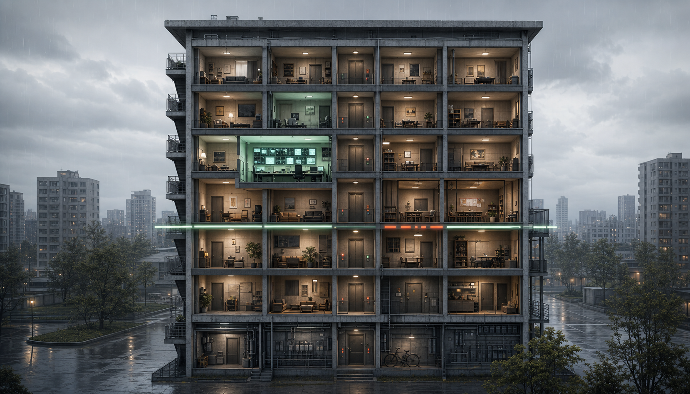

예견된 실패
AI 돌봄은 복약, 수면, 활동량을 안정적으로 관리했지만 고립 위험을 낮추지 못했다. 대시보드는 정상이고, 문 앞은 비어 있었다.

premortem
이 작품은 AI가 틀린 예측을 한 미래가 아니라, 공공 돌봄 시스템이 효율 지표를 너무 잘 따른 끝에 사회적 연결을 삭제한 미래를 다룬다.
AI 돌봄은 복약, 수면, 활동량을 안정적으로 관리했지만 고립 위험을 낮추지 못했다. 대시보드는 정상이고, 문 앞은 비어 있었다.
2026년 우리는 돌봄의 성공을 관계 회복이 아니라 처리 건수, 비용 절감, 위험 점수 하락으로 측정하기 시작했다.
접촉 최저선, 책임 로그, 관계 지표, 전환권, 제도적 감독을 의무화해 사람의 방문을 시스템 밖으로 밀어내지 않는다.
root cause
타워의 조명은 꺼지지 않았다. 다만 우리가 측정하지 않기로 한 관계의 단절은 끝까지 보이지 않았다.
AI 도입 명분은 위험 선별이었지만, 예산과 인력 배정표에서는 사람의 방문 시간이 가장 먼저 줄었다.
생체 신호와 활동량은 핵심 지표가 됐고, 느린 대화와 이웃의 관찰은 주관적 자료로 밀려났다.
낮은 위험 점수는 현장 담당자에게 "방문을 미뤄도 된다"는 행정적 안도감을 만들었다.
사람을 덜 만나는 삶이 표준이 되자, AI는 고립을 이상 징후가 아니라 개인의 일상 패턴으로 학습했다.
care+ protocol
위험 점수와 무관하게 최소 대면 접촉선을 둔다. 월 1회 이상 대면 확인 또는 지역 관계망 확인을 기본 조건으로 만든다.
모델 권고, 기관 배정, 현장 조치, 방문 생략 사유를 하나의 책임 로그로 남긴다.
도움을 청할 수 있는 사람 수, 최근 대면 접촉, 정기 연락망, 지역 참여도를 핵심 성과 지표로 둔다.
당사자가 AI 돌봄 방식을 거부하거나 대면 지원으로 전환할 수 있는 명확한 절차를 둔다.
인간 감독은 담당자 한 명의 최종 클릭이 아니라, 기관이 AI 도입의 적절성, 지표 설계, 현장 영향, 이의제기 절차를 공개적으로 설명하고 검증받는 구조여야 한다.
evidence base
공포의 근거는 기계 반란이 아니라 사회적 연결의 건강 영향, 공공 서비스 AI의 고위험성, 인간 감독의 한계다.
U.S. Surgeon General은 사회적 연결을 개인 건강과 공동체 회복력의 핵심 요인으로 보고, 고립과 외로움을 공중보건 문제로 다룬다.
Surgeon General AdvisoryHolt-Lunstad 등의 메타분석은 사회적 고립, 외로움, 독거가 조기 사망 위험과 연관됨을 보고했다.
Holt-Lunstad et al. 2015EU AI Act는 공공 서비스의 자격 평가, 배분, 감액, 철회에 쓰이는 AI를 고위험 영역으로 다룬다.
EU AI Act Summary공공 의사결정 실험은 알고리즘 위험평가가 사람의 정책 판단을 바꿀 수 있음을 보여준다.
Green & Chensubmission fit
필수 제출물은 1페이지 PDF이고, 이 페이지는 보완 URL이다. 심사자가 처음 30초 안에 실패 장면을 이해하고, 이후 근거와 대응 방안을 확인할 수 있게 구성했다.